Da barriga ao bebé, ninguém cuida sozinho.
Somos duas enfermeiras especialistas em Saúde Infantil e Pediátrica, apaixonadas por acompanhar famílias na jornada da parentalidade — com informação séria, cuidado próximo e muita paciência para as vossas dúvidas.
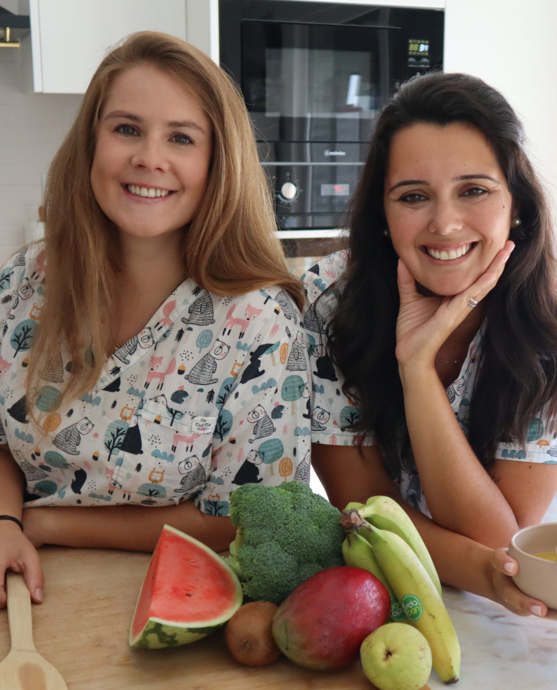
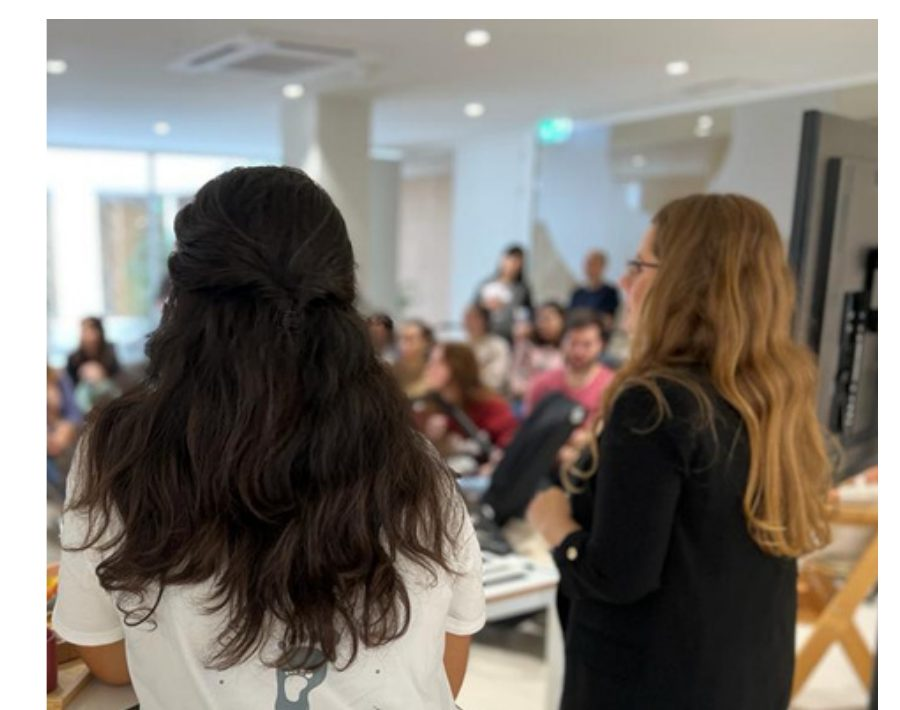
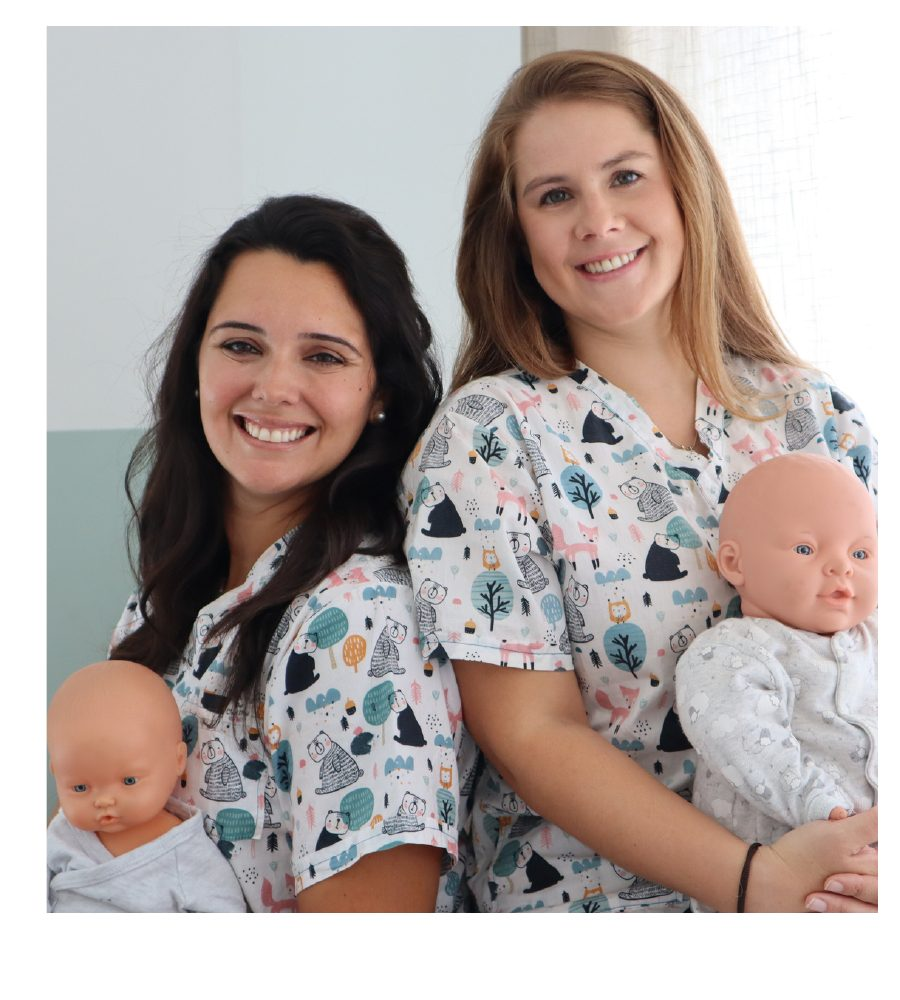
Duas colegas, amigas e companheiras de sempre.
Conheceram-se há 15 anos numa unidade de cuidados intensivos e especiais neonatais — e nunca mais se largaram. Juntas cresceram, estudaram e aprenderam a cuidar, até perceberem que o contexto hospitalar não era o limite: seria essencial ajudar cada vez mais famílias na maravilhosa, mas também desafiante jornada que é a parentalidade.
Assim nasceu a Grow Up Baby — o cuidado que aprenderam junto aos berços mais frágeis, agora ao serviço de todas as famílias.
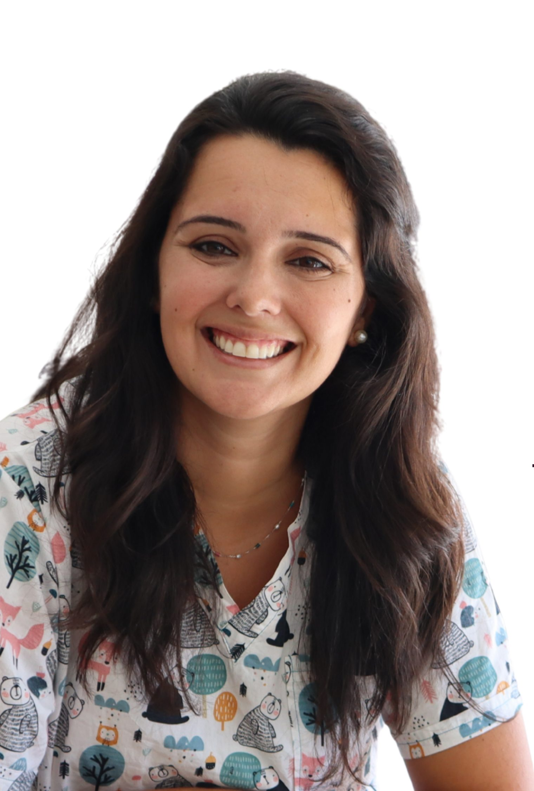
Telma Maravilha
Nascida e criada em Setúbal, licenciou-se em Enfermagem em 2011 e, desde Janeiro de 2012, exerce numa Unidade de Cuidados Intensivos Neonatais e Pediátricos — cuidar de grandes prematuros e das suas famílias é uma das suas grandes paixões.
Em 2018 tornou-se Enfermeira Especialista em Saúde Infantil e Pediátrica pela Universidade Católica de Lisboa. Mãe de dois rapazes.
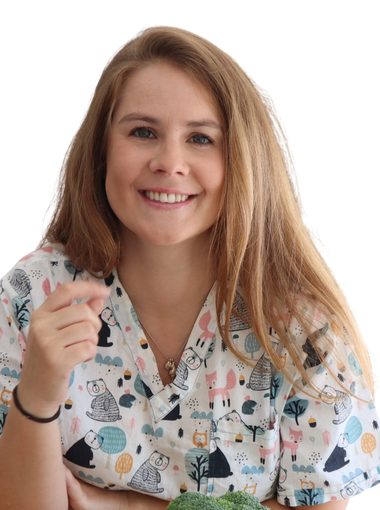
Filipa Santos
Apaixonada por bebés e crianças desde sempre, licenciou-se em Enfermagem em 2010 e exerce, desde então, numa Unidade de Cuidados Intensivos Neonatais e Pediátricos — o seu foco: o empowerment parental.
Em 2018 tornou-se Enfermeira Especialista em Saúde Infantil e Pediátrica pela Universidade Católica de Lisboa, com foco na literacia em saúde e no desenvolvimento infantil.
"Promoção da capacitação parental e do desenvolvimento infantil como primeiro foco de atuação."
A Grow Up Baby nasce em 2020, em plena pandemia, através de uma página de Instagram — @growupbaby_ — que se mantém até à atualidade. Nela encontram-se conteúdos válidos cientificamente, atuais, que pretendem promover a literacia em saúde, bem como o direito à igualdade e acessibilidade à informação.
Capacitação parental
Dar às famílias ferramentas práticas para cuidarem com confiança.
Desenvolvimento infantil
Acompanhar cada etapa de crescimento com uma base científica sólida.
Acesso à informação
Conteúdo gratuito e rigoroso, ao alcance de todas as famílias.
Especialistas em Saúde Infantil no Instagram
Parcerias e redes de apoio que nos fizeram chegar a cada vez mais pais.
Além da página de Instagram, ao longo dos anos temos estabelecido colaborações que ampliam o nosso alcance: workshops e newsletter com o Continente, workshops com a Philips Avent, participação na "A Nossa Tarde" da RTP, no podcast "A Vida Passa a Comer" da TSF, e diversos congressos e seminários em saúde.
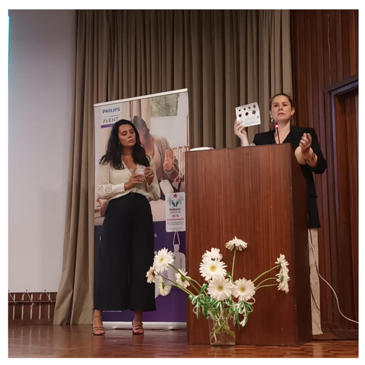
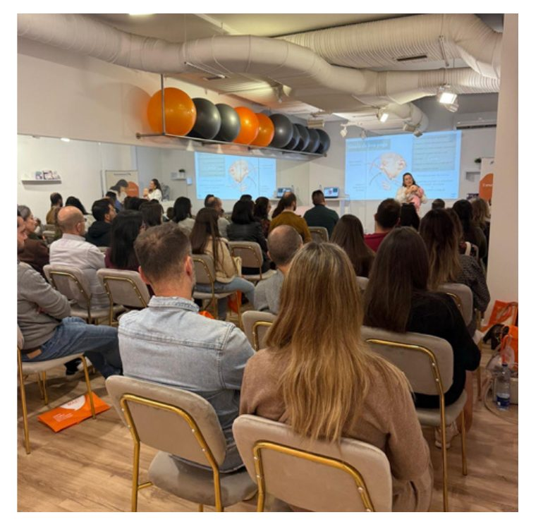
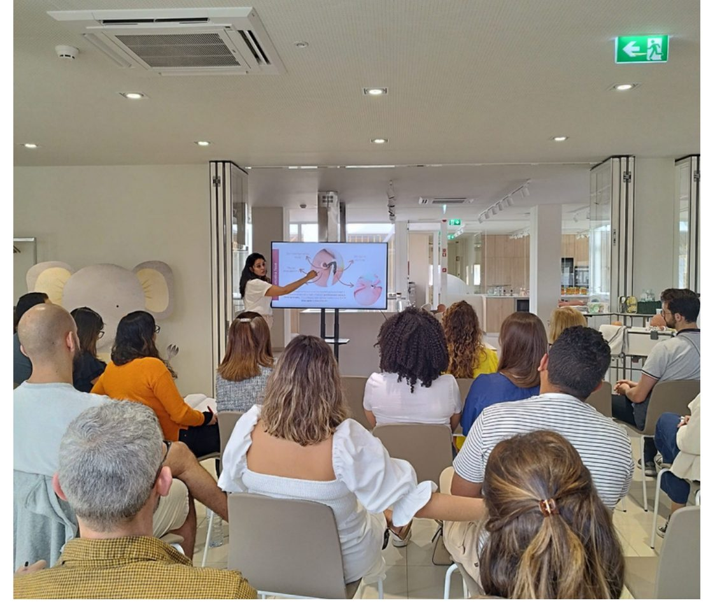
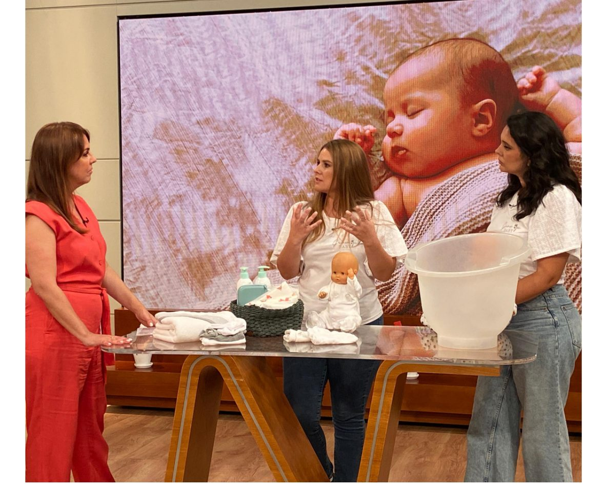
Ao longo do tempo, todos os serviços foram criados para um só objetivo:
capacitar os cuidadores a prestarem cuidados de forma segura e tranquila. Presencial, ao domicílio, ou online — escolham o formato que faz sentido para a vossa família.
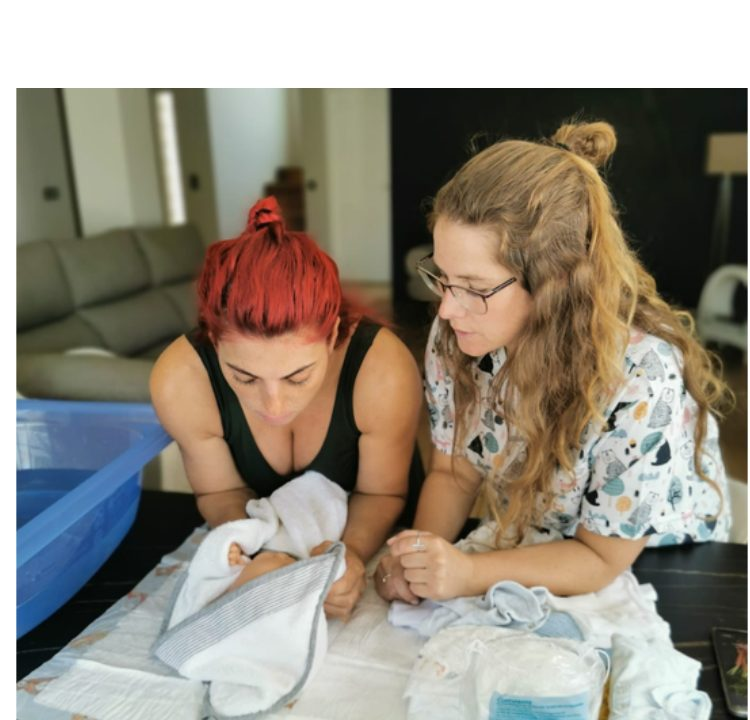
Presencial ou onlineCurso Cuidados ao Bebé
Criado para antecipar as dúvidas mais comuns da maternidade, aliando teoria à prática.
- Temas personalizados às dúvidas dos cuidadores
- Treino prático: banho, muda de fralda, sono
- Manobra de desengasgamento
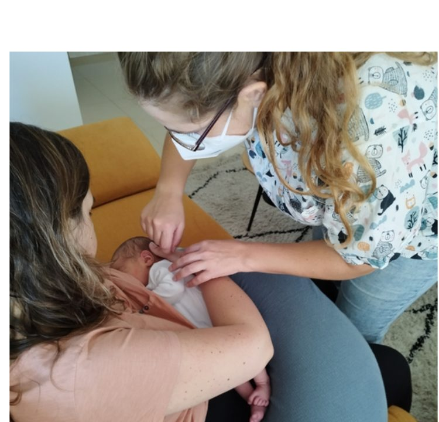
Domicílio ou onlineConsulta de Enfermagem
Apoio aos pais ao longo do crescimento do seu filho, com seguimento à distância.
- Teste do pezinho e avaliação do bebé (peso)
- Apoio à amamentação
- Esclarecimento de todas as dúvidas dos pais
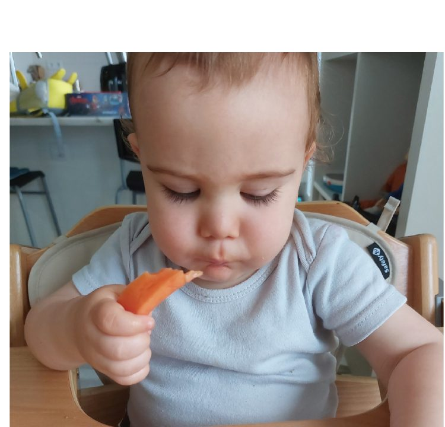
Presencial ou onlineWorkshop Introdução Alimentar
Porque os desafios não surgem só nos primeiros meses. Preparamos os cuidadores para esta nova etapa.
- Alimentos proibidos no primeiro ano
- Sinais de prontidão alimentar e alergénios
- Diferentes métodos de introdução alimentar
Marquem a vossa consulta, curso ou workshop
Preencham o formulário com o serviço que procuram e a melhor forma de vos contactar — respondemos por email para combinar data, formato (presencial, domicílio ou online) e todos os detalhes.
Também podem escrever diretamente para geral@growupbaby.pt ou enviar mensagem no Instagram @growupbaby_.
Pedido de marcação
O que dizem as famílias Grow Up Baby
"A amamentação foi difícil, mas eu estava muito preparada e ciente de como deveria agir por causa do workshop de amamentação. O que me salvou foi usar todos os recursos que eu conhecia antes de mochucar — não tive fissura nenhuma."
"A Telma foi uma querida e explicou tudo de uma forma mega fácil de entender! A ideia deste curso personalizado ao domicílio é mesmo ser prático — treinamos com os materiais dos pais para tornar mais realista."
"Ontem a enfermeira Telma teve cá em casa e tornou tudo mais leve! Vocês não imaginam a diferença que este serviço faz numa mãe em pós-parto — se eu soubesse o que sei hoje, tinha procurado este apoio ao domicílio muito antes."
"Foi muito bom estar com este casal super querido! Conhecemos a Filipa através da comunidade — a dedicação e o cuidado com que nos receberam tornaram tudo mais fácil e tranquilo."
"Dia de consulta em casa com a querida Enf.ª Telma para check-up deste bebé e para esclarecer questões como amamentação, como usar corretamente o marsúpio, entre outras dúvidas em pelo caminho."
"Adorámos a Telma e vocês também vão adorar! Este serviço é um presente incrível para dar a futuros pais, inclui curso de cuidados ao bebé no pré-parto e apoio ao domicílio no pós-parto."
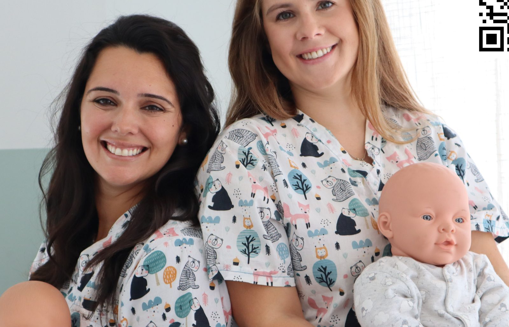
Estamos aqui para vos apoiar.
Da gravidez aos primeiros anos do vosso bebé, a Grow Up Baby caminha ao vosso lado — com ciência, empatia e experiência de quem já cuidou de milhares de famílias.